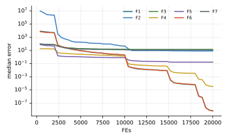

Chương 6 · Mục 6.1Chapter 6 · Section 6.1
Tối ưu kiến sư tửAnt Lion OptimizerAnt Lion Optimizer — ALOALO — a funnel-shaped sand trap
Châu Văn Vân · PTITHCM
Mục tiêu bài họcLearning objectives
Sau chương này, bạn có thểAfter this chapter you will be able to
- Mô tả năm bước săn của kiến sư tử: kiến đi ngẫu nhiên, đào bẫy, kiến sa bẫy, bắt mồi, dựng lại bẫy.Describe the five hunting steps: ant random walk, trap building, entrapment, catching prey, rebuilding the trap.
- Viết bước đi ngẫu nhiên tích lũy và phép chuẩn hóa vào miền [c, d].Write the cumulative random walk and its normalization into [c, d].
- Giải thích cơ chế thu hẹp bẫy bằng tỉ số I và vai trò của cá thể ưu tú.Explain trap shrinking through the ratio I and the role of the elite.
- Ước lượng chi phí tính toán của ALO và so sánh với PSO.Estimate ALO's computational cost and compare it with PSO.
Tổng quanOverview
Ấu trùng kiến sư tử đào bẫy hình phễuAntlion larvae dig funnel-shaped traps
- Do Seyedali Mirjalili đề xuất năm 2015 (Advances in Engineering Software 83).Proposed by Seyedali Mirjalili in 2015 (Advances in Engineering Software 83).
- Ấu trùng kiến sư tử (họ Myrmeleontidae) đào hố hình nón trong cát mềm, rồi nằm chờ ở đáy.Antlion larvae (family Myrmeleontidae) dig cone-shaped pits in soft sand and wait at the bottom.
- Khi con kiến trượt vào miệng hố, kiến sư tử hất cát lên để con mồi trượt xuống đáy. Ăn xong, nó sửa lại bẫy.When an ant slips over the rim, the antlion throws sand so the prey slides to the bottom. After feeding, it rebuilds the pit.
- Kiến sư tử khỏe hơn đào hố lớn hơn nên bắt được nhiều mồi hơn. ALO mô phỏng điều này bằng chọn lọc roulette.Fitter antlions dig larger pits and catch more prey. ALO models this with roulette-wheel selection.
Ý tưởng cốt lõiCore idea
Kiến là các lời giải đi dò đường ngẫu nhiên, nhưng luôn bị giam trong miệng hố của một kiến sư tử. Hố co dần theo thời gian, kéo kiến về sát kiến sư tử; con kiến nào tốt hơn sẽ chiếm chỗ kiến sư tử.Ants are solutions that wander at random, yet always confined to the rim of an antlion's pit. The pit shrinks over time, pulling ants close to the antlion; an ant that does better takes its place.
Mô hình toán họcMathematical model
Bước đi ngẫu nhiên tích lũy, rồi ép vào miệng hốA cumulative random walk, squeezed into the pit
- Mỗi bước đi tiến hoặc lùi đúng 1 đơn vị; cộng dồn lại thành một đường đi ngẫu nhiên dài T bước.Each step moves +1 or −1; the cumulative sum is a random walk of T steps.
- ai, bi: giá trị nhỏ nhất và lớn nhất của đường đi theo biến thứ i.ai, bi: minimum and maximum of the walk in variable i.
- cti, dti: cận dưới và cận trên của biến i ở vòng t. Phép chuẩn hóa co–giãn tuyến tính đường đi vào đúng miền này.cti, dti: lower and upper bounds of variable i at iteration t. The normalization rescales the walk linearly into that range.
Mô hình toán họcMathematical model
Bẫy quanh kiến sư tử co lại từng bậcThe trap around each antlion shrinks in steps
- w = 2, 3, 4, 5, 6 khi t vượt 10%, 50%, 75%, 90%, 95% của T: miệng hố hẹp lại theo bậc thang.w = 2, 3, 4, 5, 6 once t passes 10%, 50%, 75%, 90%, 95% of T: the pit narrows in steps.
- RA: đường đi quanh kiến sư tử chọn bằng roulette; RE: đường đi quanh cá thể ưu tú.RA: walk around an antlion picked by roulette; RE: walk around the elite.
- Bắt mồi: nếu một con kiến tốt hơn kiến sư tử của nó, kiến sư tử dời tới vị trí con kiến đó.Catching prey: if an ant becomes fitter than its antlion, the antlion moves to that ant's position.
Mã nguồn gốc dùng I = 1 + 10w · t / T và để I = 1 trong 10% vòng lặp đầu, nên miệng hố không bao giờ nở rộng hơn miền tìm kiếm.The original code uses I = 1 + 10w · t / T and keeps I = 1 for the first 10% of iterations, so the pit never exceeds the search range.
Các bướcSteps
Các bước của ALOALO step by step
Mirjalili (2015); n kiến và n kiến sư tử.Mirjalili (2015); n ants and n antlions.
- Khởi tạo kiến và kiến sư tử; kiến sư tử tốt nhất là ưu tú.Initialize ants and antlions; the best antlion is the elite.
- Mỗi kiến chọn một kiến sư tử bằng bánh xe roulette.Each ant picks an antlion by roulette wheel.
- Bước ngẫu nhiên quanh kiến sư tử đã chọn và quanh ưu tú, trong biên co theo I; lấy trung bình.Random walks around the chosen antlion and the elite, within bounds shrunk by I; average them.
- Kiến tốt hơn kiến sư tử thì bị “bắt”: kiến sư tử dời tới vị trí đó.An ant fitter than its antlion is “caught”: the antlion moves there.
- Cập nhật ưu tú; lặp đến hết ngân sách.Update the elite; repeat until the budget is spent.
2 – 5 vòng lặp chínhmain loop
Thuật toánAlgorithm
Lưu đồFlowchart
Tham sốParameters
Tham số của ALOALO parameters
| Tham sốParameter | Ý nghĩaMeaning | Giá trị thường dùngTypical value |
|---|---|---|
| I | Hệ số co biên: 1 + 10w t/TBound shrink factor: 1 + 10w t/T | w = 2…6 theo t/T |
| n | Số kiến (= số kiến sư tử)Number of ants (= antlions) | 30 |
ALO gần như không có tham số tự chỉnh; lịch w cố định trong bài gốc.ALO has almost no tunable parameters; the w schedule is fixed in the original paper.
Thuật toán ALOThe ALO algorithm
Mã giảPseudocode
Hai quần thể song song: kiến (dò tìm) và kiến sư tử (bộ nhớ). Tham số người dùng chỉ còn n và T.Two parallel populations: ants (explorers) and antlions (memory). The user only sets n and T.
- Khởi tạo ngẫu nhiên n con kiến và n kiến sư tử; ưu tú ← kiến sư tử tốt nhấtRandomly initialize n ants and n antlions; elite ← best antlion
- for t = 1 … T
- for mỗi con kiếneach ant
- Chọn một kiến sư tử bằng roulette; cập nhật c, d theo IPick an antlion by roulette; update c, d with I
- Tạo đường đi quanh kiến sư tử và quanh ưu tú, chuẩn hóaBuild walks around that antlion and around the elite, normalize
- Vị trí kiến ← trung bình hai đường điAnt position ← mean of the two walks
- Đánh giá kiến; kiến sư tử chiếm chỗ kiến tốt hơn nóEvaluate ants; antlions take over fitter ants
- Cập nhật ưu túUpdate the elite
- return ưu túthe elite
Mô phỏngSimulation
10 con kiến, 10 kiến sư tử trên cùng địa hình10 ants and 10 antlions on the same landscape
Tam giác vàng là kiến sư tử, tam giác cam là ưu tú, chấm xanh là kiến. Vòng tròn quanh ưu tú cho thấy miệng hố: nó co lại đột ngột mỗi khi w tăng bậc.Yellow triangles are antlions, the orange one is the elite, blue dots are ants. The circle around the elite shows the pit: it shrinks abruptly each time w steps up.
Cài đặt theo mã nguồn gốc: I = 1 + 10wt/T, roulette theo 1/f.Implemented as in the original code: I = 1 + 10wt/T, roulette on 1/f.
Ví dụ trong sách tham khảoExample from the reference book
Okwu & Tartibu (2021), chương 9: ví dụ hàm BoothOkwu & Tartibu (2021), chapter 9: the Booth function
| Nội dungItem | Sách ghiThe book says | Kiểm chứngVerified |
|---|---|---|
| Nghiệm tốt nhấtBest solution | [1, 2], f = 2.393·10−14[1, 2], f = 2.393·10−14 | Cực tiểu Booth ở (1, 3) với f = 0; còn f(1, 2) = 5The Booth minimum is at (1, 3) with f = 0; f(1, 2) = 5 |
| Công thức 9.7Equation 9.7 | thiếu ngoặc ở tử sốmissing parentheses in the numerator | (X − a)(d − c) / (b − a) + c(X − a)(d − c) / (b − a) + c |
| Công thức 9.12Equation 9.12 | I = 10w · t/TI = 10w · t/T | I = 10w · t/T (lũy thừa)I = 10w · t/T (a power) |
| Số tác tửNumber of agents | “40 search agents (n = 30)”“40 search agents (n = 30)” | hai con số mâu thuẫn; cần ghi rõ khi lặp lại thí nghiệmthe two numbers conflict; state one when replicating |
Ứng dụng HRSG trong sách (entropy nhỏ nhất 58.738 kJ/kg·K) không đủ dữ liệu đầu vào để kiểm lại; nên coi là minh họa.The book's HRSG application (minimum entropy 58.738 kJ/kg·K) lacks enough input data to be re-checked; treat it as an illustration.
Ví dụ tính tayWorked example
Biên co lại bao nhiêu?How much do the bounds shrink?
- T = 500, t = 300: t/T = 0.6 nên w = 3, I = 1 + 1000 · 0.6 = 601.T = 500, t = 300: t/T = 0.6 so w = 3, I = 1 + 1000 · 0.6 = 601.
- Miền [−100, 100] co thành [−0.166, 0.166] quanh kiến sư tử.The domain [−100, 100] shrinks to [−0.166, 0.166] around the antlion.
Ý nghĩaMeaning
- Sau nửa quá trình, kiến chỉ còn đi trong vùng nhỏ hơn 600 lần: ALO gần như chỉ khai thác.After half the run, ants walk in a region 600× smaller: ALO becomes almost pure exploitation.
- Cuối quá trình w = 6: biên co gần một triệu lần.At the end w = 6: bounds shrink nearly a million times.
Các biến thểVariants
Các biến thể của ALOALO variants
MOALOMOALO
Bản đa mục tiêu có kho lưu trữ (Mirjalili và cs., 2017).Multi-objective version with an archive (Mirjalili et al., 2017).
BALOBALO
Bản nhị phân cho chọn đặc trưng (Emary và cs., 2016).Binary version for feature selection (Emary et al., 2016).
ALO + LévyALO + Lévy
Thay bước ngẫu nhiên đều bằng bước Lévy.Replace uniform walks with Lévy steps.
ALO hỗn loạnChaotic ALO
Dùng ánh xạ hỗn loạn thay số ngẫu nhiên.Chaotic maps instead of random numbers.
Ứng dụngApplications
Ứng dụng của ALOALO applications
Các bài toán thường gặp với ALO trong tài liệu.Problems commonly tackled with ALO.
Thiết kế kết cấuStructural design
Giàn, dầm, ăng-ten.Trusses, beams, antennas.
Năng lượngEnergy
Điều độ kinh tế, đặt máy phát phân tán.Economic dispatch, distributed generator placement.
Chọn đặc trưngFeature selection
BALO trên dữ liệu y sinh.BALO on biomedical data.
Điều khiểnControl
Chỉnh hệ số PID.PID gain tuning.
Thực nghiệm · ALOExperiment · ALO
Kết quả trên bộ 7 hàm, D = 10, 30 lần chạyResults on the 7-function suite, D = 10, 30 runs
| HàmFunction | Trung bìnhMean | Độ lệchStd | Trung vịMedian | so PSOvs PSO |
|---|---|---|---|---|
| F1 · Sphere | 7.22e−10 | 2.75e−9 | 0 | ≈ |
| F2 · Rosenbrock | 1.96e+2 | 4.74e+2 | 8.35e+0 | − |
| F3 · Rastrigin | 1.46e+1 | 5.54e+0 | 1.44e+1 | − |
| F4 · Ackley | 3.32e−5 | 4.05e−6 | 3.35e−5 | − |
| F5 · Griewank | 1.83e−1 | 8.27e−2 | 1.66e−1 | − |
| F6 · Shifted Sphere | 7.28e−10 | 2.77e−9 | 0 | ≈ |
| F7 · Shifted Rastrigin | 1.29e+1 | 5.97e+0 | 1.19e+1 | − |
- Sai số f(xbest) − f* sau 20 000 lần đánh giá; n = 30; tham số mặc định của bài gốc; giá trị < 10−8 ghi là 0.Error f(xbest) − f* after 20,000 evaluations; n = 30; default parameters of the original paper; values < 10−8 shown as 0.
- Cột cuối: Wilcoxon rank-sum với PSO (α = 0.05): + tốt hơn, − kém hơn, ≈ không khác biệt.Last column: Wilcoxon rank-sum vs PSO (α = 0.05): + better, − worse, ≈ no difference.
- Xếp hạng Friedman trung bình: 8.79, đứng thứ 10/18 trong 18 thuật toán của giáo trình.Average Friedman rank: 8.79, position 10/18 among the textbook’s 18 algorithms.
Thực nghiệm · ALOExperiment · ALO
Đường hội tụ (trung vị 30 lần chạy)Convergence (median of 30 runs)

Mã nguồnSource code
Mã nguồn PythonPython source code
Đoạn trích phần cập nhật chính; tệp đầy đủ có chú thích và tham số mặc định theo bài gốc.Excerpt of the main update; the full file documents the default parameters of the original paper. code/si/algorithms/alo.py
while not prob.done: t += 1 I = 1.0 for thr, w in ((0.1, 2), (0.5, 3), (0.75, 4), (0.9, 5), (0.95, 6)): if t > thr * T: I = 1 + 10 ** w * t / T lb, ub = prob.lb / I, prob.ub / I wts = 1 / (lf - lf.min() + 1e-12) if np.any(lf < 0) else 1 / (lf + 1e-12) for i in range(n): j = roulette(rng, wts) RA = _walk(rng, prob, T, min(t, T), lb, ub, L[j]) RE = _walk(rng, prob, T, min(t, T), lb, ub, elite) A[i] = (RA + RE) / 2 A = prob.clip(A)
Chạy lại toàn bộ thực nghiệm: python -m experiments.run_continuous trong thư mục code/ (xem PROTOCOL.md).Reproduce all experiments: python -m experiments.run_continuous inside code/ (see PROTOCOL.md).
Đánh giáAssessment
Tự động chuyển từ khám phá sang khai thácAutomatic shift from exploration to exploitation
Điểm mạnhStrengths
- Đường đi ngẫu nhiên quanh nhiều kiến sư tử cho khả năng khám phá tốt ở đầu quá trình.Random walks around many antlions explore well early on.
- Miệng hố co theo I tự đẩy thuật toán sang khai thác, không cần chỉnh tay.The pit shrinking with I moves the search to exploitation without tuning.
- Ưu tú và cơ chế chiếm chỗ giữ lại lời giải tốt nhất qua các vòng.Elitism and the take-over rule keep the best solutions across iterations.
Hạn chế và biến thểLimitations and variants
- Mỗi con kiến tạo hai đường đi dài T cho từng chiều ở mỗi vòng, nên tốn O(n · T · d) phép sinh số ngẫu nhiên mỗi vòng.Each ant builds two length-T walks per dimension per iteration: O(n · T · d) random draws per iteration.
- I tăng theo bậc thang nên bước tìm kiếm co đột ngột; dễ hội tụ sớm.I grows in steps, so the search radius collapses abruptly; premature convergence is common.
- Biến thể: ALO nhị phân cho chọn đặc trưng (Emary và cs., 2016), ALO đa mục tiêu MOALO (Mirjalili và cs., 2017).Variants: binary ALO for feature selection (Emary et al., 2016), multi-objective MOALO (Mirjalili et al., 2017).
Bài tập và thực hànhExercises and labs
Luyện tập: tính tay rồi lập trìnhPractice: by hand, then in code
Bài tập lý thuyếtTheory exercises
- Với r = (1, 0, 0, 1, 1), viết đường đi tích lũy rồi chuẩn hóa vào [c, d] = [2, 4].With r = (1, 0, 0, 1, 1), write the cumulative walk and normalize it into [c, d] = [2, 4].
- Với T = 100, tính I theo công thức bài báo tại t = 50, 80, 96.With T = 100, compute the paper's I at t = 50, 80, 96.
- Vì sao lấy trung bình RA và RE thay vì chỉ đi quanh ưu tú?Why average RA and RE instead of walking around the elite only?
Thực hành Python / MATLABPython / MATLAB labs
- Cài ALO và chạy lại ví dụ hàm Booth; kiểm tra nghiệm đúng là (1, 3).Implement ALO and rerun the Booth example; confirm the true optimum (1, 3).
- So sánh ALO có và không có thành phần ưu tú trên 30 lần chạy.Compare ALO with and without the elite term over 30 runs.
- Cài Binary ALO cho bài toán chọn đặc trưng (liên kết chương 15).Implement Binary ALO for feature selection (see chapter 15).
Tài liệu tham khảoReferences
Đọc thêm: các bài báo gốcFurther reading: the original papers
- S. Mirjalili, “The Ant Lion Optimizer,” Advances in Engineering Software, vol. 83, pp. 80–98, 2015, doi: 10.1016/j.advengsoft.2015.01.010.
- S. Mirjalili, “Moth-flame optimization algorithm: A novel nature-inspired heuristic paradigm,” Knowledge-Based Systems, vol. 89, pp. 228–249, 2015, doi: 10.1016/j.knosys.2015.07.006.
- E. Emary, H. M. Zawbaa, and A. E. Hassanien, “Binary ant lion approaches for feature selection,” Neurocomputing, vol. 213, pp. 54–65, 2016, doi: 10.1016/j.neucom.2016.03.101.
- M. Shehab, L. Abualigah, H. Al Hamad, H. Alabool, M. Alshinwan, and A. M. Khasawneh, “Moth–flame optimization algorithm: variants and applications,” Neural Comput & Applic, vol. 32, no. 14, pp. 9859–9884, 2020, doi: 10.1007/s00521-019-04570-6.
- M. O. Okwu and L. K. Tartibu, Metaheuristic Optimization: Nature-Inspired Algorithms Swarm and Computational Intelligence, Theory and Applications. Springer International Publishing, 2021, doi: 10.1007/978-3-030-61111-8.
Tóm lạiIn short
Cảm ơn các bạn đã theo dõiThank you for your attention
Châu Văn Vân · PTITHCM · Tài liệu gốc: Mirjalili, Advances in Engineering Software 83, 2015Original paper: Mirjalili, Advances in Engineering Software 83, 2015